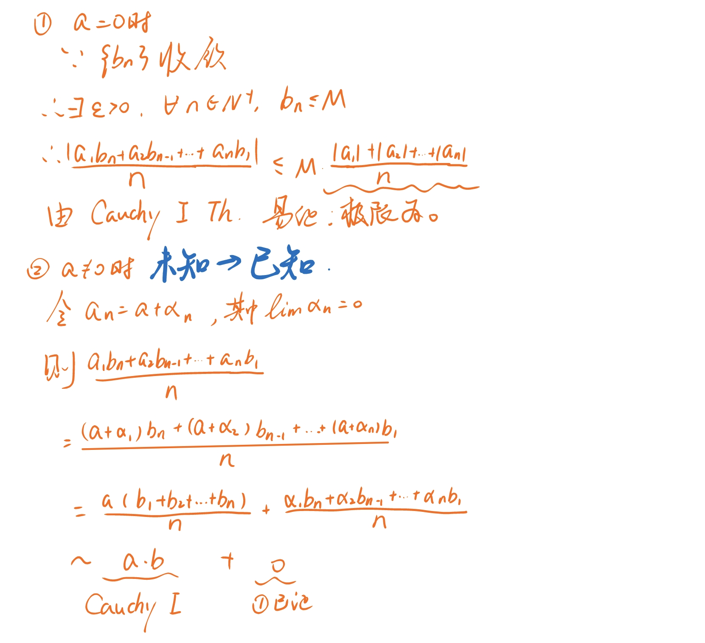

写在前面：
Tips
- 注意讨论分母是否为0
- 注意讨论极限是否存在
- 适当讨论是否为0可以化简/求出部分
- 极限差为0而商不一定为1（\(a=0\)不行，\(a\ne0\)为1（国科大讲义P3）
奇奇怪怪但是很重要的东西
数列重要极限
\(\lim C=C\)
\(\lim \dfrac1{n^{k}}=0,k>0\)
\(\lim q^{n}=0,|q|<1\)
\(\lim \sqrt[n]a=1,a>0\)
\(\lim \dfrac {a^{n}}{n!}=0\)
\(\lim \sqrt[n] n=1\)
证明见二项式定理
函数重要极限
- \(\lim\limits_{x\to x_{0}}f(x)=f(x_{0})\) 连续
- \(\lim\limits_{x\to 0}a^{x}=1\) 教材P38 注意左右极限相等
- \(\lim\limits_{x\to x_{0}}a^{x}=a^{x_{0}}\)
- \(\lim\limits_{x\to x_{0}}\ln x = \ln x_{0}\)（其他底数可以使用换底公式）
- \(\lim\limits_{\square\to 0}\dfrac{\sin\square}{\square}=1,\ \lim\limits_{\square\to \infty}\dfrac{\sin\square}{\square}=0\)（利用 \(\cos x<\dfrac{\sin x}x<1\)）
- \(\lim\limits_{x\to 0}(x)\sin(\square)=0\) 夹逼定理
- \(\lim\limits_{\square\to\infty}(1+\dfrac1\square)^{\square}=e,\ \lim\limits_{\square\to 0}(1+\square)^\frac1{\square}=e\)
（利用\(\left(1+\frac1{[x]+1}\right)^{[x]}<(1+\dfrac1x)^{x}<\left(1+\frac1{[x]}\right)^{[x]+1}\dots[x] \leq x <[x]+1\)）
函数等价无穷小
\(x\to0\begin{cases}x\sim\sin x\sim \tan x\sim \ln(1+x)\sim e^{x}-1\\1-\cos x\sim \frac12x^{2}\\x^{2}±x^{3}\sim x^{2}\\(1+x)^{\alpha}\sim1+\alpha x\\\arctan x \sim x\end{cases}\)
如：看到\(\sqrt{1+x^{2}}-1\sim \frac{1}{2} x^2\)
\(x\to0\) 次数高=作用小
\(x\to\infty\begin{cases}x^{2}+x^{3}\sim x^{3}\\\end{cases}\)
基本导数表

奇奇怪怪的公式
二项式定理
\(\lim \sqrt[n]{n}=1\quad(n>1)\)

和差化积
Tip
和差化积

积化和差

绝对值不等式
推广：
即
两边之差小于第三边 + 两边之和大于第三边
伯努利不等式、均值不等式
\(Bernoulli\) 不等式
例题4：\(设 e_{n}=(1+\dfrac1n)^{n}.\ 证明数列\{e_{n}\}单调递增且e_n<4.\) 证明： ^1e9a3c $$ \begin{align} e_{n}&=(1+\frac1n)(1+\frac1n)\cdots(1+\frac1n)\cdot1\ &<\left( \dfrac{n(1+\frac1n)+1}{n+1} \right)^{n+1}\ &=\left(\dfrac{n+2}{n+1}\right)^{n+1}\ &=\left(1+\frac1{n+1}\right)^{n+1}\ &=e_{n+1}\ \ e_{n}&=4\left[ \left( 1+\dfrac{1}{n}\right) \left( 1+\dfrac{1}{n}\right) \ldots \left( 1 + \dfrac{1}{n}\right) \cdot \dfrac{1}{2}\cdot\dfrac{1}{2}\right] \ &<4\left( \dfrac{n\left( 1+\dfrac{1}{n}\right) +\dfrac{1}{2}+\dfrac{1}{2}}{n+2}\right) ^{n+2}\ &=4\ \end{align} $$
\(e\)的泰勒展开
\(\lim\limits_{n\to \infty}n\sin(2\pi n! e)=?\)
解： 由泰勒公式：\(e=1+\frac{1}{1!}+\frac{1}{2!}+\cdots+\frac{1}{n!}+\frac{1}{(n+1)!}+\frac{\theta_{n+1}}{(n+1)!(n+1)}\;(0<\theta_{n+1}<1)\)
\([n!e=\smash{\underbrace{n!\left(1+\frac{1}{1!}+\frac{1}{2!}+\cdots+\frac{1}{n!}\right)}_{\text{整数部分舍弃}}+\frac{n!}{(n+1)!}}+\frac{n!\theta_{n+1}}{(n+1)!(n+1)}]\) \(\begin{align*} \lim_{n\to\infty}n\sin(2\pi en!)&=\lim_{n\to\infty}n\sin\bigg[2\pi en!-\overbrace{2\pi n!\Big(1+\frac{1}{1!}+\frac{1}{2!}+\cdots+\frac{1}{n!}\Big)}^{\sin(x\pm2k\pi)=\sin x\,,\;k\in\mathbb{Z}}\bigg]\\ &=\lim_{n\to\infty}n\sin\left[\frac{2\pi}{n+1}+\frac{\theta_{n+1}}{(n+1)^2}\right]\\ &=\lim_{n\to\infty}n\left(\frac{2\pi}{n+1}+\frac{\theta_{n+1}}{(n+1)^2}\right)\\&=2\pi \end{align*}\)
奇奇怪怪的证明
极限与无穷小的转化
Example
若\(\lim a_{n}=a,\ \lim b_{n}=b\), 试证明: \(\lim\dfrac{a_{1}b_{n}+a_{2}b_{n-1}+\dots+a_{n}b_{1}}{n}=ab\)
极限与无穷小的转化 + Cauchy第一定理 证:

^13b407
收敛数列保号性
极限除法
epsilon-N定义 + 收敛数列保号性
证明： \(\exists N_1\in\mathbb{N},\)
\(使得\forall n>N_{1},\ |b_{n}|>\dfrac{|b|}2\) 收敛数列保号性
\(\because \lim a_{n}=a\)
\(\therefore \forall \varepsilon>0,\ \exists N_{2}\in\mathbb{N},\ \forall n>N_{2},\)
\(使得|a_{n}-a|<\color{blue}\dfrac{|b|}4\varepsilon\dots(*)\)
\(类似地,\ \exists N_{3}\in\mathbb{N},\ \forall n>N_{3},\)
\(使得|b_{n}-b|<\color{blue}\dfrac{b^2}{4|a|+1}\varepsilon\cdots(**)\)
\(欲证\left|\dfrac {a_{n}}{b_{n}}-\dfrac ab\right|<\varepsilon\)
\(=\dfrac{|ba_{n}-ab_{n}|}{|b\cdot b_{n}}\)
\(=\dfrac{|a_{n}b\textcolor{red}{-ab+ab}-ab_{n}|}{|b\cdot b_{n}|}\) 分子拆分
\(\leq \dfrac {|b||a_{n}-a|+|a||b_{n}-b|}{|b\cdot b_{n}|}\)
\(=\dfrac{|a_{n}-a}{|b_{n}|}+\dfrac{|a|}{|b\cdot b_{n}|}\)
运用 收敛数列保号性\(|b_{n}|>\dfrac</b> b2\) \(<\dfrac2{|b|}|a_{n}-a|+\dfrac{2|a|}{b^2}|b_{n}-b|\)
\(<\dfrac2{|b|}\textcolor{blue}{\dfrac{|b|}4\varepsilon^{(*)}}+\dfrac{2|a|}{b^2}\textcolor{blue}{\dfrac{b^2}{4|a|\textcolor{lime}{+1}}^{(**)}}\) \(\textcolor{lime}{避免分类讨论}\)
\(< \varepsilon\)
开方
\(\lim a_{n}^{m}=a^{m},\ (a>0,m\in\mathbb{N}_{+})\)
证明： \(|\sqrt[3] {a_{n}}-\sqrt[3] a|=\dfrac{|a_{n}-a|}{\sqrt[3]{a_{n}}+\sqrt[3] a}\)\(<\dfrac{|a_{n}-a|}{a_{n}^\frac23+a_{n}^\frac13a^\frac13+a^\frac23}<\dfrac{|a_{n}-a|}{a^\frac23}\)
\(a_{n}^\frac13a^\frac13\)可以存在运用了 收敛数列保号性
More about: 次方差展开
次方差展开
^6bb0cf
\(\begin{aligned} a^n-b^n &=(a-b)\sum_{i=0}^{n-1}{a^ib^{n-1-i}}\\ &=(a-b)(b^{n-1}+ab^{n-2}+a^2b^{n-3}+\cdots+a^{n-3}b^{2}+a^{n-2}b+a^{n-1})\\ &=(a-b)(a^{0}b^{n-1}+a^{1}b^{n-2}+\cdots+a^{n-2}b^{1}+a^{n-1}b^{0})\\ \end{aligned}\)
证明：
\(\begin{aligned} a^n-b^n &=b^n\Big[(\frac{a}{b})^n-1\Big]\\ &=b^n\Big(\frac{a}{b}-1\Big)\sum_{i=0}^{n-1}{(\frac{a}{b})^i}=\Big(\frac{a-b}{b}\Big)b^n\sum_{i=0}^{n-1}{(\frac{a}{b})^i}\\ &=(a-b)\cdot b^{n-1}\sum_{i=0}^{n-1}{(\frac{a}{b})^i}=(a-b)\sum_{i=0}^{n-1}{b^{n-1}(\frac{a}{b})^i}\\ &=(a-b)\sum_{i=0}^{n-1}{a^ib^{n-1-i}}\\ \end{aligned}\) ^4e250d
实数公理 -> 确界原理
调和级数
思路： 基本列 中 \(p\)，\(\varepsilon\) 的任意性 + 放缩 + Cauchy收敛准则

单调数列+发散=>发散到正无穷
和差化积 + 极限
例题：证明 \(\lim\limits_{x \to x_{0}}\cos x=\cos x_{0}\)
证： $$ \begin{aligned}\left| \cos x-\cos x_{0}\right| &=\left| -2\times \sin \dfrac{x-x_{0}}{2}\times \sin \dfrac{x+x_{0}}{2}\right| \ &\leq 2\times \left| \sin \dfrac{x-x_{0}}{2}\right| \ &\leq 2\times \left| \dfrac{x-x_{0}}{2}\right| \ &=\left| x-x_{0}\right|<\varepsilon \end{aligned} $$
\(\therefore \forall\varepsilon>0,\ \exists\delta>0:\ |x-x_{0}|<\delta\Rightarrow\cdots\)
\(e\) \(\gamma\)
构造辅助函数
证明方程\(x\ln x=1在(0,+\infty)上有且仅有一根\) 即：\(x\ln x-1 = 0\)有解 简证： 存在性： 零值定理 1，e 唯一性： \(\Rightarrow\ln x-\dfrac1x\)单调！ 下略
任何奇次多项式至少有一个实零点
奇奇怪怪的方法
如何证明数列收敛
单调有界定理
子数列归并性定理
Cauchy收敛准则
如何求解数列极限
简化证明
epsilon-N定义
Stolz定理
Cauchy定理
算数平均
几何平均
连乘
夹逼定理
见下
如何证明函数极限存在
Heine归并定理
单调函数单侧极限定理
Cauchy判别准则
如何求解函数极限
夹逼定理
见下
幂指函数
Example
\(\lim\limits_{x → 0} [\frac{a_1^x + a_2^x + .....+ a_n^x}{n}]^{\frac{1}{x}} = (a_1\cdot a_{2}\dots a_n)^{\frac{1}{n}}\)
e的转化
解： \(L:=\lim\limits_{x\to0}e^{\tfrac{\ln(a_1^x+\dots+a_n^x)-\ln n}{x}}\) \(=e^{\lim\limits_{x\to0}\tfrac{\ln(a_1^x+\dots+a_n^x)-\log n}{x}}\)
法一： LHospital法则 \(\lim\limits_{x\to 0}\dfrac{\ln(a_1^x+\dots+a_n^x)-\ln n}{x}\) \(=\lim\limits_{x\to0}\dfrac{(\ln(\dots))'}1\) \(=\lim\limits_{x\to0}\dfrac{a_1^x\log a_1+\dots+a_n^x\log a_n}{a_1^x+\dots+a_n^x}\) \(=\lim\limits_{x\to0}\dfrac{\ln a_{1}+\ln a_{2}+\dots+\ln a_{n}}n\) \(=\) Therefore, \(L=e^{\tfrac1n\ln(a_{1}\cdot a_{2}\dots a_{n})}\) \(\quad=(a_{1}\cdot a_{2}\dots a_{n})^{\frac 1n}\)
法二：
想不到的放缩与 夹逼定理
夹逼定理的规范使用
- 写出不等式
- 判断敛散性
- 带入\(\lim\)符号
不能对极限直接比较大小
- \(\left(1+\dfrac1{n+2}\right)^{n}\leq \left(1+\dfrac1n-\dfrac1{n^{2}}\right)^{n}<\left(1+\dfrac1n\right)^{n},\) \(n \geq 2\)
- \(\Rightarrow \left(1+\dfrac1n-\dfrac1{n^{2}}\right)^{n}\to e\)
- \(\sqrt[n]{n!} \geq \dfrac ne\)
- Taylor: \(e^{n}=1+n+\dfrac {n^{2}}{2!}+\dots+\dfrac{n^{n} }{n!}\geq\dfrac{n^{n}}{n!}\)
奇奇怪怪
又神秘的东西
如何定义一个开集
线性空间满足八条原则
什么是数域？
什么是拓扑空间？
势
\(1,2,3...\)：可以排序：可数、可列 \([0,1]\to\mathbb R\)：不可数、不可列
连续统假设
\([0,1]\to N_{0}\to2^{N_{0}}\)
Reference：《实变函数论》
序结构：分析学
代数结构：代数学
拓扑结构：几何学
区域不变性
数分观点下的不动点
\(设f\in C[a,b],且f([a,b])\subset[a,b]则\) \(存在\xi\in[a,b],使得f(\xi)=\xi(即为[a,b]中的不动点)\)
Example
\(设f(x)在x处可微,\alpha_{n}<x_{0}<\beta_{n},\) \(\lim\limits_{n\to \infty}\alpha_{n}=\lim\limits_{n\to \infty}\beta_{n}=x_{0}\) \(证明:\lim\limits_{n\to \infty}\dfrac{f(\beta_{n})-f(\alpha_{n})}{\beta_{n}-\alpha_{n}}=f'(x_{0})\)
Solution:
添项 $\(\begin{align*} \dfrac{f(\beta_{n})-f(\alpha_{n})}{\beta_{n}-\alpha_{n}}&=\dfrac{f(\beta_{n})-f(x_{0})+f(x_{0})-f(\alpha_{n})}{\beta_{n}-\alpha_{n}}\\ &=\dfrac{\beta_0-x_0}{\beta_n-\alpha_n}\dfrac{f(\beta_{n})-f(x_0)}{\beta_{n}-x_{0}}\\&\quad-\dfrac{f(\beta_{n})-f(\alpha_{n})}{\beta_{n}-\alpha_{n}}\dfrac{f(\beta_{n})-f(\alpha_{n})}{\beta_{n}-\alpha_{n}} \end{align*}\)$
Example
\(设f(x),g(x),h(x)\in C[a,b]\cap D[a,b],试证\) \(存在\begin{vmatrix}f(a) & g(a) & h(a)\\f(b) & g(b) & h(b)\\ f'(\xi) & g'(\xi) & h'(\xi)\end{vmatrix}=0\)
Solution:
\(F(x):=\begin{vmatrix}f(a) & g(a) & h(a)\\f(b) & g(b) & h(b)\\ f(x) & g(x) & h(x)\end{vmatrix}\)
Example
\(\bigstar设f(x)在[a,b]上连续,且f(a)=f(b),证明:\) $\(M(x)=\sup\limits_{a \leq t \leq x}f(t),~m(x)=\inf\limits_{a \leq t \leq x} f(t)\)$ \(在[a,b]上连续\)
一些常考 Theorem
需要掌握从实数公理推到每一个Th 以及Th之间互推！
- Declekind分割原理
- 确界限存在原理
- 单调有界原理
- 区间套定理
- 有限覆盖定理
- 聚点定理
- 有界数列必有收敛子列
- Cauchy收敛准则